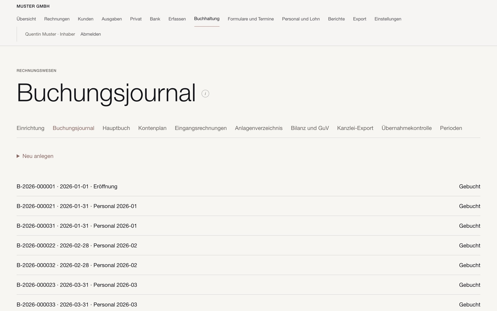

01
Buchhaltung
- Einnahmen-Ausgaben-Rechnung für Einzelunternehmen, auch als Kleinunternehmer
- Doppelte Buchhaltung für die GmbH, mit Kontenplan, Buchungsjournal, Hauptbuch, Bilanz und GuV
- Rechnungen, Zahlungen, Ausgaben und Löhne buchen sich selbst; Korrekturen laufen über Storno, nichts wird überschrieben
- Eingangsrechnungen, Anlagenverzeichnis mit AfA, Monats- und Jahresabschluss
- Jahresabschluss der kleinen GmbH als Paket für das Firmenbuch vorbereiten
- Umstieg aus einem anderen Programm: Anfangsbestände und offene Rechnungen übernehmen und abgleichen
